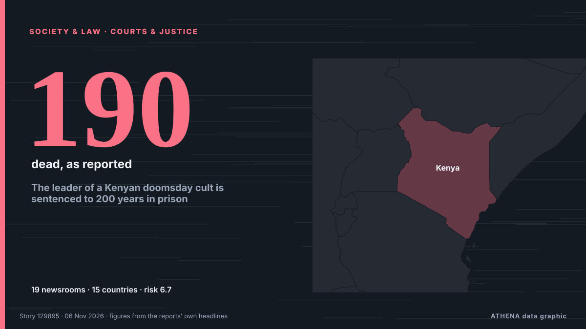

Tribunales y justicia
PatrocinadoPresentado por  Cybernetics and Artificial Intelligence Lab Welcome to the Cybernetics and Artificial Intelligence Laboratory, established at the Department of Business Administration of the National and Kapodistrian University of Athens. The lab is headed by Professor Dimitrios Thomakos. The lab aims to do research that can be published in top venues. Our research uses tools and methods of Artificial Intelligence, and lies in the following areas: - Forecasting - Decision making - Cyber security - Finance We are always looking forward to collaborating with exceptional students!
Cybernetics and Artificial Intelligence Lab Welcome to the Cybernetics and Artificial Intelligence Laboratory, established at the Department of Business Administration of the National and Kapodistrian University of Athens. The lab is headed by Professor Dimitrios Thomakos. The lab aims to do research that can be published in top venues. Our research uses tools and methods of Artificial Intelligence, and lies in the following areas: - Forecasting - Decision making - Cyber security - Finance We are always looking forward to collaborating with exceptional students!
| 24 oct | 0 |
|---|---|
| 25 oct | 0 |
| 26 oct | 0 |
| 27 oct | 0 |
| 28 oct | 0 |
| 29 oct | 0 |
| 30 oct | 0 |
| 31 oct | 0 |
| 1 nov | 2 |
| 2 nov | 3 |
| 3 nov | 6 |
| 4 nov | 5 |
| 5 nov | 8 |
| 6 nov | 0 |
Los titulares se muestran en inglés, tal como se publicaron.

The leader of a Kenyan doomsday cult is sentenced to 200 years in prison
Cult leader Paul Mackenzie was convicted of murdering 190 children and one adult after he ordered his followers to starve themselves to death in order to meet Jesus. de NPR
American National Sentenced to Life in Prison for Murders of Partner and Infant Daughter in Rome
An American citizen, Francis Kaufmann, has been sentenced to life in prison by an Italian court for the murders of his partner and infant daughter in Rome. de Arab News
‘Rohit and Kohli are still playing well’, says New Zealand captain Santner
Pujara feels Kohli's position at number three gives him more time to settle in and build an innings. de Times of India
Helsinki court sentences 2 Fitburg crew members to prison over subsea cable damage
Russian captain receives 3.5-year term, Azerbaijani boatswain sentenced to 2 years, 10 months. de Anadolu Agency (English)
ADC factional chair Bala hails court ruling nullifying Atiku’s candidacy
However, in a judgment delivered on Thursday by Justice Peter Lifu, the court declared illegal the Senator Mark-led Caretaker Committee of the ADC, which organised the primary election that produced… de Vanguard
Ex-Diddy prosecutor to lead Cornell gang rape investigation
New York's attorney general on Wednesday named an ex-federal prosecutor who oversaw the criminal case against Sean "Diddy" Combs to lead an investigation into an alleged gang rape at Cornell… de The Korea Times
UK government defends Palestine Action ban in Supreme Court
The UK Supreme Court heard a defense from a government lawyer regarding the classification of Palestine Action as a terrorist organization. de Arab News
Mexican judge arrested over alleged $2M bribe to release Ryan Wedding's second-in-command
A Mexican judge has been arrested on allegations that he accepted a $2-million US bribe in exchange for granting bail to a man accused of acting as second-in-command to Ryan Wedding, the former… de CBC News
Top UN court to rule Nov 19 on Myanmar/Rohingya genocide case
The ICJ has spent seven years considering allegations that Myanmar's brutal repression of the Rohingya violated the 1948 UN Genocide Convention. de Free Malaysia Today
5 things to know about Nigerian professor Dapo Akande elected ICJ judge
Nigerian-born legal scholar Professor Dapo Akande has been elected as a judge of the International Court of Justice (ICJ), marking a significant milestone in his career and a diplomatic victory for… de Vanguard
Equatorial Guinea Seeks Life for Soldier
Prosecutors asked a military court in Equatorial Guinea for life in prison for a sergeant accused of killing two women. de The Rio Times
Seoul court upholds ex-president Yoon's election conviction
Former South Korean president Yoon Suk Yeol declared martial law in December 2024, ordering troops to shut down parliament, before lawmakers defied the military to vote down the decree. de CNA (Channel NewsAsia)
Dozens arrested outside Supreme Court hearing on Palestine Action ban
The banned UK group, which targets Israel's war machine, has inspired activists in Europe and beyond. de Al Jazeera English
Rickshaw driver facing trial over death of mother of two after Westlife gig
Woman was on her way to meet her husband with two friends after concert. de Irish Independent
Monfils gives emotional farewell in Paris with wish for daughter Skai
PARIS: Gael Monfils turned his tennis farewell into a message for his young daughter Skai on Tuesday, telling her he hoped she would one day play in Paris as he thanked fans in the French capital… de Business Recorder
Poland: Dispute Over Constitutional Court Escalates
Poland’s dispute over the constitutional court has escalated, with President Nawrocki blocking the swearing-in of five newly elected judges. de Kyiv Post
US Judge Dismisses Trump Administration’s Harvard Admissions Probe Case
BOSTON: A federal judge on Monday dismissed a lawsuit by President Donald Trump’s administration seeking to force Harvard University to turn over records for an investigation into whether it… de Arab News
Famous man loses bid for injunction to stop reporting of allegations
The man brought legal action against Independent Television News (ITN) and Guardian News and Media, publisher of The Guardian. de Evening Standard (London)
Lindsay Clancy Returns to Court in a Bid to Dismiss Charges She Killed Her Three Young Children
PLYMOUTH, Mass. (AP) — Lindsay Clancy returns to court Monday in a bid to dismiss the charges that she murdered her three young children. de The Canadian Press (via CityNews)